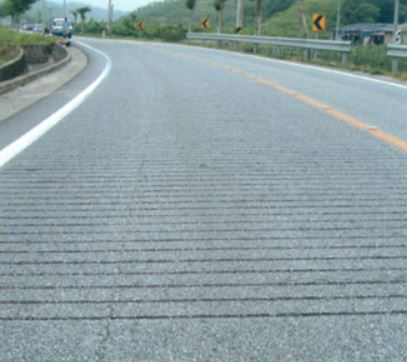

그루빙이란?
1960년대 미 우주항공국에서 항공기 안전을 위하여 처음 개발한 포장의 표면처리 공법으로, 공항 및 도로 표장면에 입체적인 홈을 형성하여, 타이어 패턴과 같은 효과를 내는 "미끄럼 방지 도로 안전 기술"로 수막현상 방지 및 배수성 향상에 다른 미끄럼 방지, 결빙 억제 및 주행안정성 향상, 소음 감소 대책 등을 위하여 적용되고 있다.

그루빙의 효과
1. 수막현상 방지 : 젖은 노면의 사고 감소효과 탁월 2. 곡선구간 조향성 향상 : 곡선구간의 차량 이탈사고 예방 3. 소음 감소대책 : 콘크리트 포장 횡방향 타이닝 대신 종방향 시공으로 소음감소 4. 온도상승효과 5. 한냉지역의 노면동결억제와 슬립방지대책 6. 주행안정성 : 해안도로, 산간도로 및 장대교량 운행시 접지력 향상 7. 미끄럼 저항성 8. 기 타 : 위험구간 진입경고, 졸음예방, 우천시 야간 난반사 억제 등
종방향(세로형)그루빙
세로형의 홈은 커브, 경사면, 옆바람을 받기 쉬운 직선도로, 육교 등에 적합하다. 커브 등에서는 타이어의 그립력을 높이고 코너링시의 조종을 안정화, 직선도로에서는 옆바람에 대한 저항력을 가져 미끄럼에 의한 사고를 방지한다.

횡방향(가로형) 그루빙
가로형의 홈은 주행시에 타이어로부터 전달 되는 음과 진동에 의해 도로에서는 졸음 운전의 방지, 감속 경고등에 실시, 교차로, 횡단보도, 요금소 등의 앞에 시공한 경우, 우천시의 젖은 노면에서 제동거리를 단축할 수 있다.